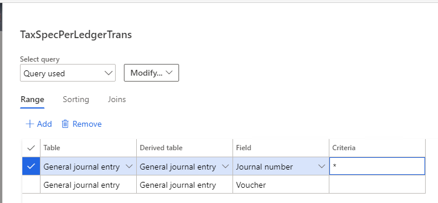

Sales tax specification by ledger transaction report
This topic explains how to use the Sales tax specification by ledger transaction report to view and print information about ledger transactions that sales tax is calculated for.
Tax accounts vs. non-tax accounts
The Sales tax specification by ledger transaction report shows tax transactions for both tax accounts and non-tax accounts. These accounts are categorized in the following way:
- Tax account – An account is considered a tax account when a tax transaction is posted, and the main account on the Sales Tax journal line is a tax account, such as a sales tax payable account or a sales tax receivable account.
- Non-tax account – An account is considered a non-tax account when a tax transaction is posted, and the main account on the original transaction is a non-tax account, such as a revenue account or an expense account.
For tax accounts, the Origin, Sales tax receivable, and Sales tax payable columns on the report show 0 (zero). For non-tax accounts, those columns show amounts.
Filtering the data on the report
When you generate the report, the following default fields are available. You can use these fields to filter the data that is shown on the report.
| Field | Description |
|---|---|
| Date | Use the fields in the From and To sections to define a date range for the tax transactions. |
| Main account | Use the fields in the From and To sections to define a range of main accounts. |
| Sales tax code | Use the fields in the From and To sections to define a range of sales tax codes. |
| Grouping | Select whether the report should be grouped by ledger account or sales tax code. |
| Subtotal by sales tax code | Set this option to Yes to show subtotals by sales tax code. |
| Totals only | Set this option to Yes to show only totals. |
| Main accounts only | Set this option to Yes to include only main accounts on the report. |
Showing only non-tax accounts on the report
To show only non-tax accounts on the report, set up a filter condition, such as an asterisk (*), as shown in the following illustration.
